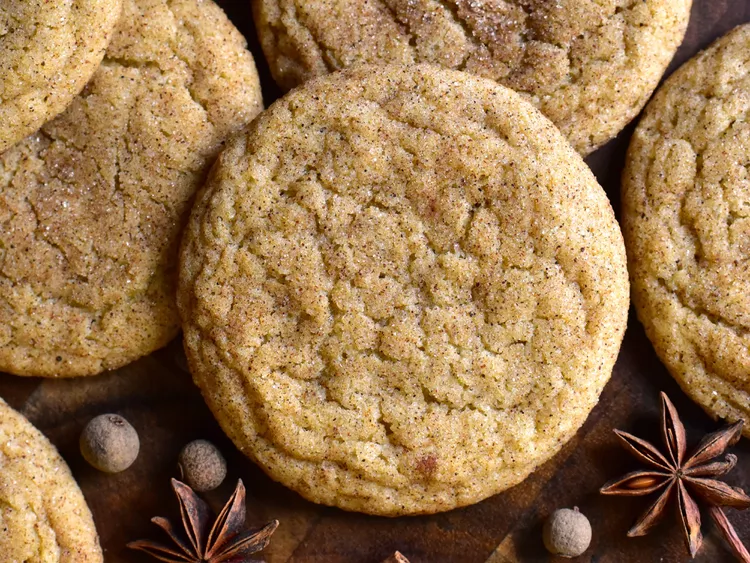

Chai Sugar Cookies
These are the best chai cookies!

Ingredients:
For the Spiced Sugar
- 6 tablespoon (75 g) granulated white sugar
- ½ teaspoon ground cinnamon
- ¼ teaspoon ground ginger
- ⅛ teaspoon ground allspice
- ⅛ teaspoon ground nutmeg
- ¼ teaspoon ground cardamom
- pinch of ground cloves
For the Chai Cookies
- 1 ¼ cups (280 g) unsalted butter
- 2 cups (250 g) all purpose flour, spooned and leveled
- 1 tablespoon ground cinnamon
- 1 ½ teaspoon ground ginger
- ½ teaspoon ground allspice
- ½ teaspoon ground nutmeg
- 1 teaspoon ground cardamom
- ¼ teaspoon ground cloves
- ½ teaspoon baking powder
- ½ teaspoon baking soda
- ½ teaspoon salt
- 1 ¼ cups (275 g) light brown sugar
- 4 egg yolks, at room temperature
- 2 teaspoon vanilla
Instructions:
- Add the granulated white sugar, cinnamon, ginger, allspice, nutmeg, cardamom and cloves to a bowl. Whisk to combine.
- Add the butter to a pot and heat it over medium heat. Allow the butter to melt and come to a simmer. Simmer until the butter is foamy, giving off a nutty scent and has browned. The whole process should take about 5-8 minutes. Remove the butter from the heat and transfer it to a small bowl. Pop it in the fridge and allow it to cool completely until it is solid but still malleable.
- Preheat the oven to 350 degrees. Line two baking sheets with parchment paper and set aside.
- In a medium bowl, whisk together the flour, cinnamon, ginger, allspice, nutmeg, cardamom, cloves, baking soda, baking powder and salt. Then set aside the flour mixture.
- In a large bowl whip the cooled brown butter with an electric mixer on high speed until it is fluffy, about 1 minute. Then add in the brown sugar and mix on high speed until creamed together, about 2 minutes. (You can also use the bowl of a stand mixer fit with a paddle attachment.)
- Add in the egg yolks and vanilla and mix for one minute on medium speed until pale and fluffy. Scrape the sides of the bowl as necessary.
- Add the dry ingredients to the wet ingredients and combine on low speed.
- Scoop the dough into 22 portions with a 2 tablespoon cookie scoop, then roll into balls. Roll the cookie dough balls in the spiced sugar mixture.
- Transfer the cookie dough to a parchment paper lined baking sheet. Bake 8 cookies at a time, for 11- 12 minutes.
- Let the cookies cool for 5 minutes on the cookie sheet, then transfer the baked cookies to a wire rack to cool completely. Then serve!